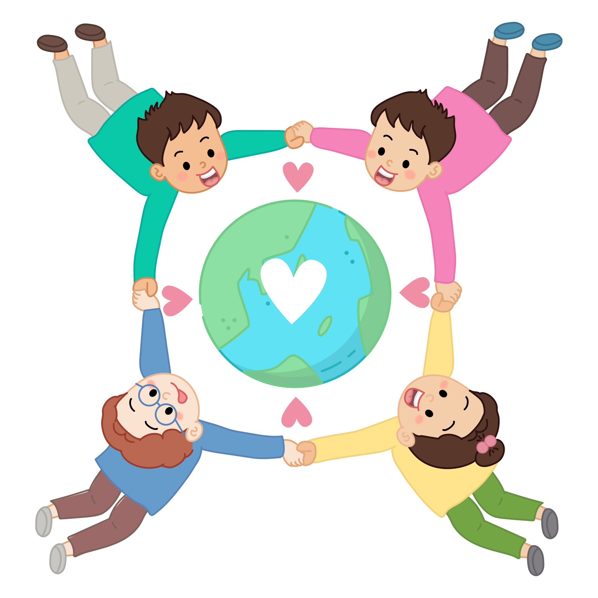

- 활동
- 자기 점검
-
추가 질문인간은 자연 속에서 살아가면서 자연을 이용합니다. 자연이 망가지면 그 속에 살고 있는 인간도 살기 어려워질 것입니다. 인간에게 다가오는 여러 환경 문제는 자연과 함께 살아가야 하는 관계임을 이해하는 것에서부터 풀어갈 수 있을 것입니다.
-
얼굴을 클릭하세요.인간이 자연을 바라보는 관점에는
어떤 것이 있는지 알고 있나요?자연과 인간이 함께 살아야 하는 까닭을 이해했나요?매우 그렇다그렇다좀 더 노력해야 한다핵심
정리